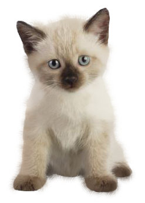

<div>
<p>Je m'appelle Johanna, geek et artiste en herbe, je suis aussi developpeuse Front-end, passionné d'informatique, d'art et de mise en page de site web dynamique et original, le language JavaScript à etait mon premier grand amour, c'est donc tout naturellement que j'ai poursuivie dans voie du front-end. Depuis, j'adore apprendre de nouvelles technologies et de nouveaux languages, je suis autonome, j'apprend vite et je sais travailler en équipe. 😊</p></div>
